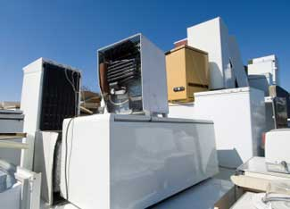

Enjoy Cool Energy Savings With Greener Refrigerators
Save money and electricity with these tips to make your refrigerator more energy efficient. Plus, here’s how to know if it’s time to recycle the old fridge and buy a new one.
By Megan Phelps
Sept. 16, 2008
If you’re looking for simple ways to save energy at home, your refrigerator is a good place to start. That’s because your fridge is one of your home’s single biggest electricity users (other members of this club include your air conditioner and your water heater.) But with a few simple steps you can make your current refrigerator more efficient - and when it’s time to buy a new fridge, these resources can help you make a smart choice.
Fine Tune your Refrigerator
What can you do to make your current fridge greener? A good place to start is with this list from the American Council for an Energy Efficient Economy (ACEEE), and there’s a similar list of tips from Energy Star.
Here are a few of the strategies these resources suggest:
- Adjust the thermostat of the refrigerator to between 36 to 38 degrees Fahrenheit, and make sure the freezer is set between zero to 5 degrees.
- Minimize frost buildup by defrosting regularly.
- Keep your refrigerator in a cool location - ideally it’s not in direct sunlight or right next to your stove.
- Make sure the seals on the door are airtight by checking to see whether the door can hold a dollar bill when it’s closed. If not, it may be time to replace the seals or the refrigerator.
- Keep the door shut as much as you can! For example, know what you want before you open it, and keep your leftovers in labeled containers so they don’t take as long to find.
You may have heard that you can save energy by cleaning your refrigerator’s condenser coils. While that seems like a common sense way to keep your refrigerator running more efficiently, there’s a surprisingly heated debate about this online, with some sources saying this is an energy myth. On the other hand, there are probably at least small energy savings from cleaning the coils - check out this Home Energy article to read more about one program that tried to measure the savings. In any case, cleaning your refrigerator coils can’t hurt.
Choosing a New Refrigerator
If you have an older refrigerator, upgrading to a newer model can save money in the long term through reductions in your electric bills. Energy Star has a refrigerator retirement calculator that can help do the math. Remember that if you do decide to buy a new refrigerator, you won’t save any energy if you simply move the old one out into the garage as a second refrigerator. One green alternative is to recycle the old fridge.
When you’re shopping for a new refrigerator, look for energy efficient models. A good place to start is by checking for the Energy Star label and - good news! - this standard was recently updated to require higher levels of efficiency. You can get a complete list of all refrigerators with an Energy Star label here.
For another list of efficient refrigerators, check out this page comparing refrigerator models from Greener Choices. The list includes data on prices and reliability, as well as on energy use.
If your fridge is relatively new and energy efficient enough, but needs basic maintenance, read Repair a Broken Refrigerator from The Family Handyman magazine. It can help you reduce fridge noise, fix a broken ice maker, and more.
Radical Energy Reduction
For most homes, the steps above will produce the energy savings you’re looking for. But for some people that’s not quite enough. In particular, homes that are powered by renewable energy generally need to consume as little energy as possible. (It’s usually much cheaper to cut your electricity use than to upgrade to a larger solar or wind system.) If you’re looking for serious electricity savings, here are a few options to consider:
- Choose a very efficient refrigerator, even if it has a higher price tag. One popular choice for solar- or wind- powered homes is a SunFrost model. Another option for off-the-grid homes is to use gas-powered refrigerators rather than electric, such as these CrystalCold propane refrigerators.
- Go the DIY route to create a greener fridge. Solar DIY enthusiast Gary Reysa has links to a number of related projects on his Web site BuilditSolar.com. (Scroll down to see the refrigerators.) One of these links is an intriguing project for converting a chest freezer into a highly efficient refrigerator. Find the full article here.
- Scrap the refrigerator entirely. It sounds difficult, but some Mother Earth News readers have done it. You can read about some of those experiences here and here. There’s also a nice essay about living without a refrigerator on the Path to Freedom Web site.
Have you tried any of these tips? Gone shopping for an energy-efficient refrigerator? Lived without a fridge for an extended period of time? Share your experiences by posting a comment below.
 ISTOCKPHOTO/GUILLERMO LOBO Your refrigerator is one of the biggest energy users in your home. Fortunately, some simple tips can keep it running as efficiently as possible. |
 ISTOCKPHOTO When it's time to get rid of your old refrigerator, don't just move it out to the garage as a second fridge. Keeping an inefficient old refrigerator running will also run up your electric bill. The best option is usually to recycle the old refrigerator. |
|